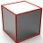
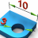

Print box
Define projections for views when printing. → |
Determine the position of a projection cuboid for an orthogonal projection of the model and determine the content of each projection face. The content is adjusted after changes to the model. The projections are automatically saved for printing in the document.
Projection name
In Save as enter or select a name for the projection. The entire name of a projection is made up of 'reference system name + projection name + projection direction'.
Reference system
WP: Select a workplane  . The orthogonal projection faces align themselves with the axes of the workplane. Only workplanes that are stored permanently in a document can be selected. The projection cuboid is not extended around the origin of a reference system outside the model.
. The orthogonal projection faces align themselves with the axes of the workplane. Only workplanes that are stored permanently in a document can be selected. The projection cuboid is not extended around the origin of a reference system outside the model.


| Main projection direction from above, switch to main projection direction from front |
Main projection direction from front, switch to main projection direction from above |


Modify current projection
| Select a projection face by clicking with the left mouse button | |
Update projects, e.g., after showing or hiding entities or after changes to the visibility filter. | ||
Show handles |


 Update the projection modified options. Adjust the projection cuboid to the currently visible entities  .
.

 Edit the properties or position of existing projected notes and dimensions  . Left-click the text or dimension entity and reposition it without keeping the mouse button pressed. Use the right mouse button to call further commands, such as to switch between diameter and radius dimensions.
. Left-click the text or dimension entity and reposition it without keeping the mouse button pressed. Use the right mouse button to call further commands, such as to switch between diameter and radius dimensions.

Manage projections
Save current project  .
.

Edit a projection  . Select the projection from the list of stored projections by clicking the preview.
. Select the projection from the list of stored projections by clicking the preview.

Delete a stored projection  . Select the projection from the list of stored projections by clicking the preview.
. Select the projection from the list of stored projections by clicking the preview.

General
Enlarge print box: Modify the size of the projection cuboid  . At 0 there is no border around the information projected onto the face.
. At 0 there is no border around the information projected onto the face.
Transparent preview: The projection face is transparent  .
.

Representation
visualization mode: Select the type of representation of the model projected onto the face . By selecting the '+ edges view', a representation is created with model edges as lines that resembles a drawing. For this purpose, in ‘Options / properties > Graphic > System > Rendering', enable the 'Silhouette' option.

Use clipping plane: Enable a stored clipping plane  .
.
Box for clipping: Use the projection face to define a clipping plane instead of a stored clipping plane. Enable the handles, draw the projection face to the position in the model .
Clipping fill color: Highlight the clipping plane in color. Select a color for the clipping plane.

Notes and dimensions
Show hidden dimensions and notes: Show hidden dimensions and notes.
Project notes: Project meaningful texts for the selected projection face.
Project dimensions: Project meaningful dimensions for the selected projection face .

Color: Select the color for the projected notes and dimensions .
Reference symbol: Insert a symbol in the representation at the coordinates origin of the selected workplane .
Symbol size: Modify the size of the symbol .
Scale representation: Modify the size of representation of the text, dimensions and symbol for the origin.

Clip plane cutting line
Show cutting line: Mark the position of the clipping plane with a cutting line. Select one or several clipping planes.
Font: Select the font name for the identifying name of the cutting line.
Font size: Select the font size for the identifying name of the cutting line.
Arrow size: Select the arrow size cutting line.
Cutting line color: Select the color for the cutting line.